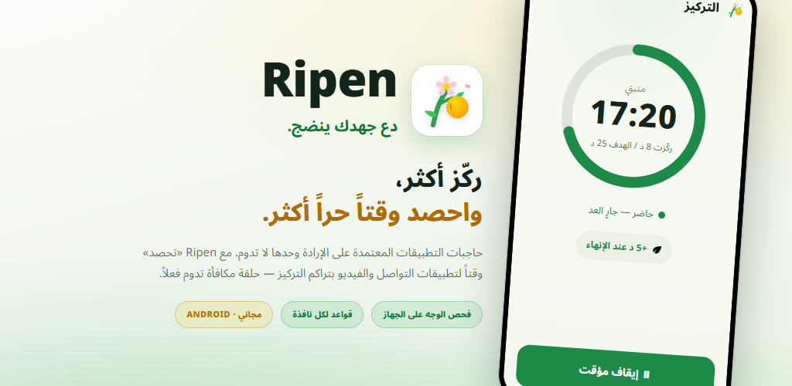
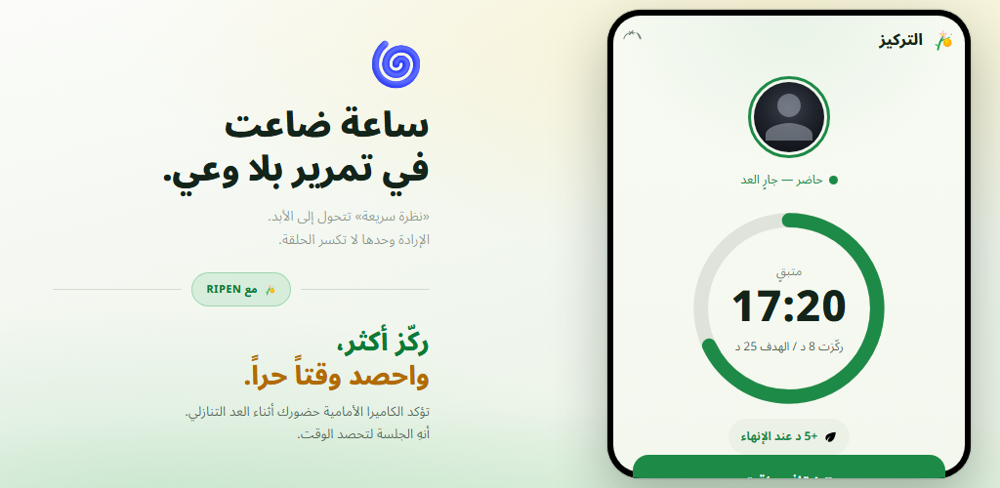
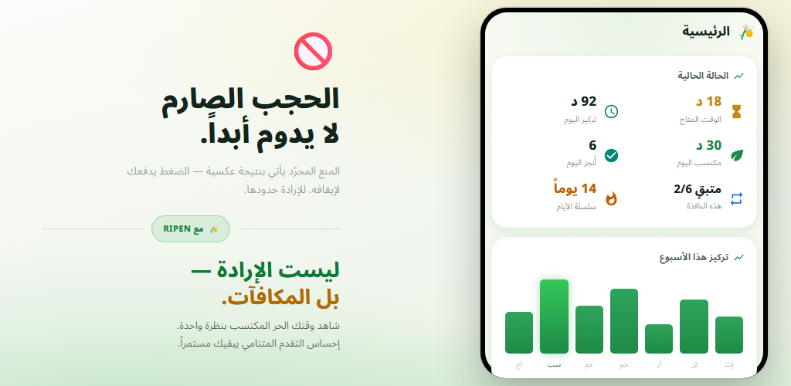
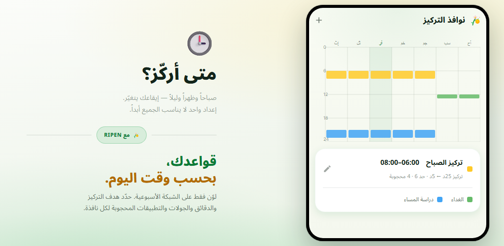
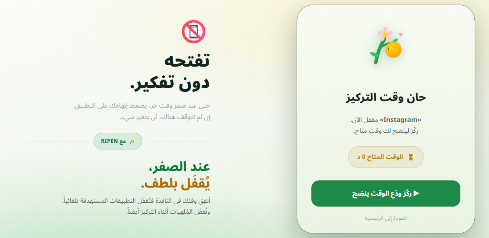
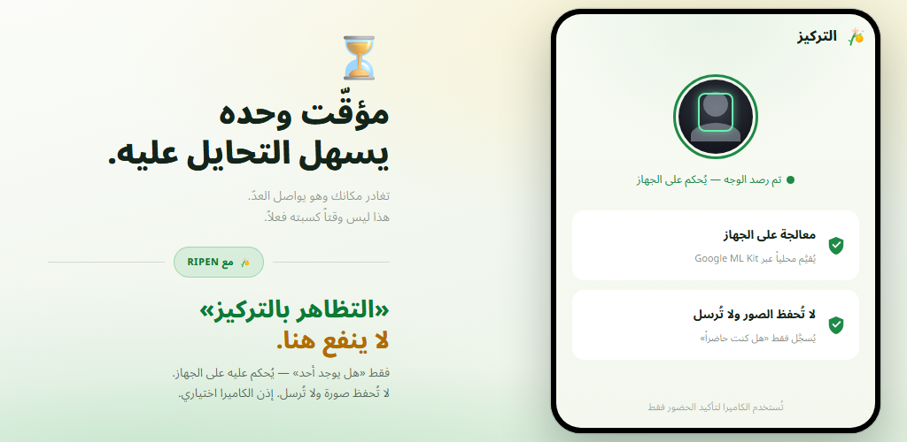

حلقة المكافأة
في كل مرة تُكمل فيها مؤقّت تركيز، تكسب وقتًا لتطبيقات التواصل والفيديو. المكافآت، لا الإرادة، هي ما يغيّر سلوكك.
حاجبات التطبيقات التي تعتمد على قوة الإرادة وحدها لا تدوم. Ripen تطبيق عادات قائم على المكافأة: كلما ركّزت ودرست أكثر، زاد الوقت الذي «تحصده» لتطبيقات التواصل والفيديو. يجري التحقق من الحضور بالكاميرا على جهازك، ويمكنك إيقافه لكل نافذة زمنية.
Android 8.0 فأحدث · مجاني · بلا إعلانات · بلا حساب

لا إعدادات معقّدة. كل ما تحدده هو متى تركّز، ولكم من الوقت، وكم من الوقت تستعيده.
لوّن الشبكة الأسبوعية لاختيار الأيام والساعات التي تريد التركيز فيها
عند تفعيل التحقق من الحضور، تتأكد الكاميرا الأمامية من وجودك بينما يعدّ المؤقّت تنازليًا
كل جولة تُكملها تمنحك الدقائق التي حددتها (ويصلح اختبار الكلمات أيضًا)
عند بلوغ 0 دقيقة متبقية، تُحجب التطبيقات التي اخترتها بلطف
في النوافذ التي فُعّل فيها التحقق من الحضور، لا يتقدّم مؤقّت التركيز إلا ما دام وجهك أمام الشاشة. أكمل الهدف لتكسب الدقائق التي حددتها لتطبيقات التواصل أو الفيديو. أما الجولات التي تتركها مبكرًا فلا تمنحك شيئًا.

اطّلع على الوقت المتاح وتركيز اليوم والمكتسب اليوم وسلسلة الأيام بنظرة واحدة. وتكشف رسوم الاتجاهات الأسبوعية والشهرية وخريطة حرارية للساعات عن أفضل أوقات تركيزك.

لوّن الشبكة الأسبوعية فقط لتحديد الأيام والساعات التي تريد التركيز فيها. لكل نافذة هدف تركيز خاص بها، ودقائق لكل جولة، وحد أقصى للجولات، وتطبيقات محظورة، وتحقق من الحضور بالكاميرا. خارج النوافذ، أنت حر.

بعد أن تستنفد وقت النافذة، يؤدي فتح تطبيق اخترته إلى ظهور شاشة حظر. وتُقفل التطبيقات المُلهية أيضًا أثناء جلسات التركيز. ويمنعك «قفل الإعدادات» من تخفيف القواعد لاحقًا.

المؤقّت وحده يواصل العد حتى لو ابتعدت. يستخدم Ripen الكاميرا الأمامية ليحكم فقط على وجود وجه أمام الشاشة — على جهازك. لا تُحفظ أي صورة ولا تُرسل. ويمكنك أيضًا اختيار نوافذ بلا كاميرا.

شاهد كيف تركّز وتحصد الوقت، ثم كيف تُقفل تطبيقاتك عند نفاده.
اقلب معادلة «أريد التوقف ولا أستطيع» — بالمكافآت.
في كل مرة تُكمل فيها مؤقّت تركيز، تكسب وقتًا لتطبيقات التواصل والفيديو. المكافآت، لا الإرادة، هي ما يغيّر سلوكك.
تحكم الكاميرا الأمامية فقط على ما إذا كنت أمام الشاشة. تجري المعالجة على جهازك ولا تُحفظ أي صورة ولا تُرسل. ويمكنك إيقافه لكل نافذة.
اضبط نوافذ متعددة حسب اليوم والوقت. لكل نافذة هدف تركيز ودقائق وحد أقصى للجولات وتطبيقات محظورة خاصة بها.
أجب إجابة صحيحة عن عدد تحدده من أسئلة المفردات الإنجليزية (4 خيارات) لتكسب جولة. نحو 10,000 كلمة مصنّفة حسب مستويات CEFR، مع اختبار لتحديد المستوى وقائمة مراجعة ومجموعات كلماتك الخاصة.
دقائق يمكنك استخدامها لحظة بدء النافذة — حتى قبل أن تركّز. وتُضاف فوق مكافآت تركيزك.
ميزة التزام تمنعك من التلاعب بالإعدادات لزيادة وقت الترفيه. التغييرات التي تخفف القواعد تتطلب جدولة إلغاء القفل والانتظار من 1 إلى 30 يومًا.
اتجاهات التركيز وتقويم التركيز ومعدل الإكمال وأفضل ساعات تركيزك واتجاهات استخدام التطبيقات المحظورة — كلها معروضة بصريًا.
دون فتح التطبيق، يعرض إشعار دائم الوقت المتاح ونافذة التركيز التالية والوقت المتبقي في جلستك. وعند الإكمال يصدر صوتًا ويهتز.
اختر سمة حسب النظام أو فاتحة أو داكنة. التطبيق متاح بـ12 لغة، منها العربية والإنجليزية واليابانية.
قد تبدو «كاميرا للتحقق من التركيز» أمرًا مقلقًا. لكن Ripen مصمّم والخصوصية أولًا.
يجري اكتشاف حضور الوجه على جهازك عبر Google ML Kit. ولا يُرسل الفيديو إلى أي خادم خارجي أبدًا.
يحكم فقط على وجود وجه. لا تُحفظ الصور ومقاطع الفيديو ولا تُرسل أبدًا. كل ما يسجّله هو عدد الثواني التي كنت فيها حاضرًا ومركّزًا.
تُخزَّن سجلات التركيز والإعدادات على جهازك ولا تُرسل أبدًا إلى خوادم Ripen. إذا كان النسخ الاحتياطي في Android مفعّلًا، تُضمَّن إعداداتك في النسخة الاحتياطية لحسابك على Google وتُستعاد عند إعادة التثبيت.
لا تسجيل ولا تسجيل دخول، ولا إعلانات أو أدوات تحليلات داخله. نزّله وابدأ فورًا.
نزّله من Google Play